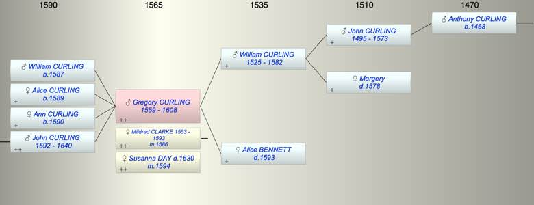

| [Index] |
| Gregory CURLING (1559 - 1608) |
|  |
| b. abt 1559 |
| m. (1) 16 Feb 1586 Mildred CLARKE (1553 - 1593) at Wouldham nr Chatham |
| m. (2) 1594 Susanna DAY ( - 1630) at St Laurence |
| d. 1608 at St Laurence aged 49 |
| Parents: |
| William CURLING (1525 - 1582) |
| Alice BENNETT ( - 1593) |
| Siblings (6): |
| Roger CURLING (1557 - 1590) |
| William CURLING (1561 - 1618) |
| Susanna CURLING (1563 - 1604) |
| Alice CURLING (1564 - 1570) |
| Anthony CURLING (1567 - 1626) |
| Nicholas CURLING (1570 - 1619) |
| Children (4): |
| WIlliam CURLING (1587 - ) |
| Alice CURLING (1589 - ) |
| Ann CURLING (1590 - ) |
| John CURLING (1592 - 1640) |
| Events in Gregory CURLING (1559 - 1608)'s life | |||||
| Date | Age | Event | Place | Notes | Src |
| abt 1559 | Gregory CURLING was born | ||||
| 1582 | 23 | Death of father William CURLING (aged 57) | Note 1 | ||
| 16 Feb 1586 | 27 | Married Mildred CLARKE (aged 33) | Wouldham nr Chatham | Note 2 | |
| 1587 | 28 | Birth of son WIlliam CURLING | St Lawrence | bap 3 Mar 1587 St Lawrence | |
| 1589 | 30 | Birth of daughter Alice CURLING | Minster | bap MInster 4 May 1589 | |
| 1590 | 31 | Birth of daughter Ann CURLING | Minster | bap Minster 4 Oct 1590 | |
| 1592 | 33 | Birth of son John CURLING | Minster | bap MInster 15 Oct 1592 | |
| 1593 | 34 | Death of mother Alice BENNETT | Note 3 | ||
| 1593 | 34 | Death of wife Mildred CLARKE (aged 40) | St Laurence | buried 5 Aug 1593 St Laurence | |
| 1594 | 35 | Married Susanna DAY | St Laurence | Note 4 | |
| 1608 | 49 | Gregory CURLING died | St Laurence | buried 31 May 1608 ex FMP PR | |
| Death of son WIlliam CURLING | Note 5 | ||||
| Personal Notes: |
|
Will of Gregorie Curling CCA PRC/17/45/60 PRC/16/78 C/5
• The 3rd March 1605 • Gregorie Curlinge • of the parish of St Laurence in the Isle of Thanet in the County of Kent, yeoman • soul to God the Father and body to be buried as executors shall think good • to the poor of the parish of St Laurence £5.00 paid yearly in five instalments over 5 years • to sons of Anthony Curling: John, William and Anthony, £20.00 to be equally divided between them and to be invested for each of them until they each reach the age of 21. • to Edward, son of brother Roger, £10.00, to be likewise invested and paid to him at the age of 21. • to Robert and James Swinford, sons of my brother William Swinford, £10.00 + profit thereof at 21. • to Wife £10.00 within one month after his decease • to daughters Alice and Anne the sum of £200.00 each to be invested and paid to them on marriage or at age 21. • Said daughters to have £5.00 a year apiece from the profit of their portions and if not sufficient, executors to make provision as they see fit. • to executors £5.00 per year for their pains • to each of his God-children [un-named], the sum of 3 shillings and four pence • to John Curling son of brother William, £4 [? could be shillings] + profit at age 21 • to John his own son at age 21, the residue of his unbequeathed goods and chattels + profit • if his own son John dies, then John son of brother William to have the bequest above. • if the said John, son of brother William also dies, the bequest is to go to his daughters , divided equally between them. • He has four acres of land forfeited and engaged to him by Roger Curling of St Laurence, yeoman. If the said Roger pays executors £20.00 at any time during the minority of his son John, then Roger shall have the same four acres to him and his heires for ever. • to servant Richard Walker at the age of 41, one annuity of forty shillings per year for the rest of his life. • to son John ‘all my lands whyn [within?] the realm of England when he reaches 21 • if son John dies before 21, John son of brother William to inherit lands, but paying to Gregorie’s daughters Alice and Anne Curling £400 to be equally divided between them. • if Wlm’s son John dies, the lands to go to Alice and Anne but they must pay to the 3 sons of Anthonie Curling, viz John, William and Anthony, £200 to be divided equally between them, Alice & Anne paying £100 each. • Executors Paul [Claude?] Clogbrooke [Claybrooke?] gent, Menasses Horwood gent, brother William Courling [sic] yeoman. • Witness Allen Thomas • Further will is that if both his own and William’s sons called John die and his daughters Alice and Anne inherit they must each pay £100 to the heirs of brother William, to be equally divided between them • son John to have £15 per year maintenance during his minority and if thought insufficient by executors they shall make him further payments as they think fit Witnesses: Rychard Allen and Thomas Chinner. Brother Swinford is his brother in law and this fits with the marriage of William Swinford to Gregory's sister Susan(na) Curling at St M 27 Oct 1589. 1588 churchwarden at St Laurence |
| Created on a Mac™ using iFamily for Mac™ on 8 Oct 2023 |